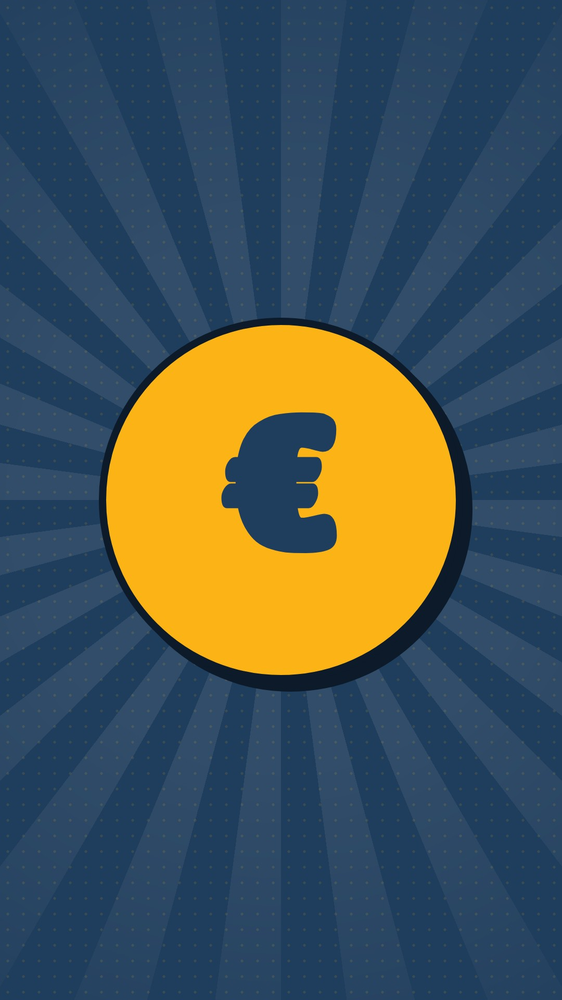
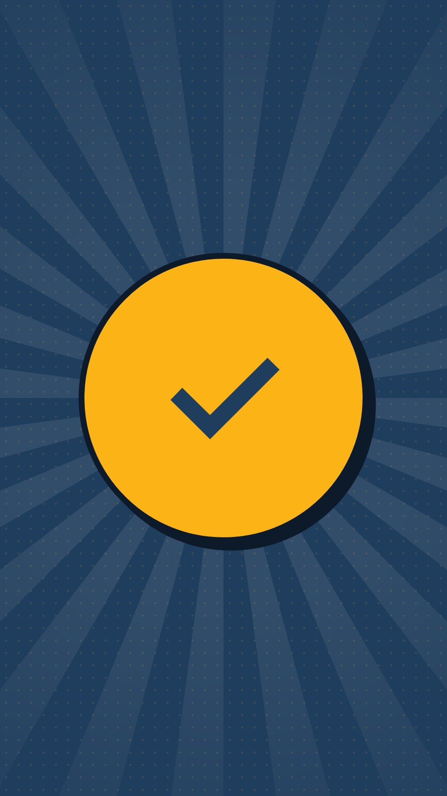
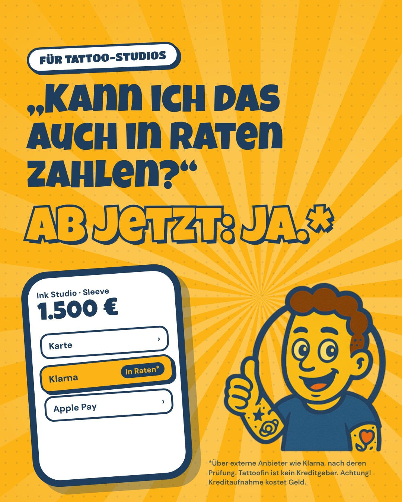
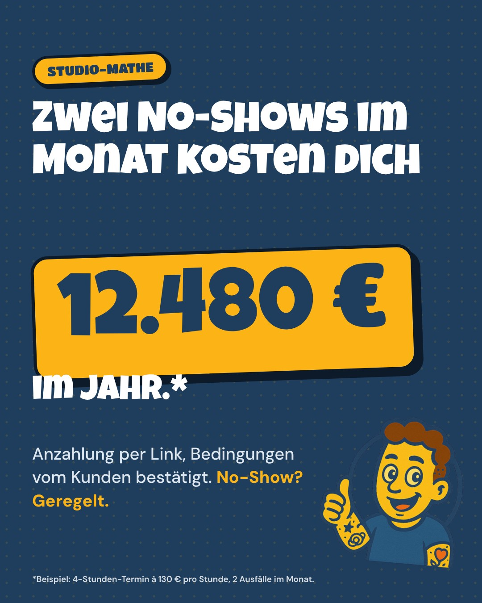
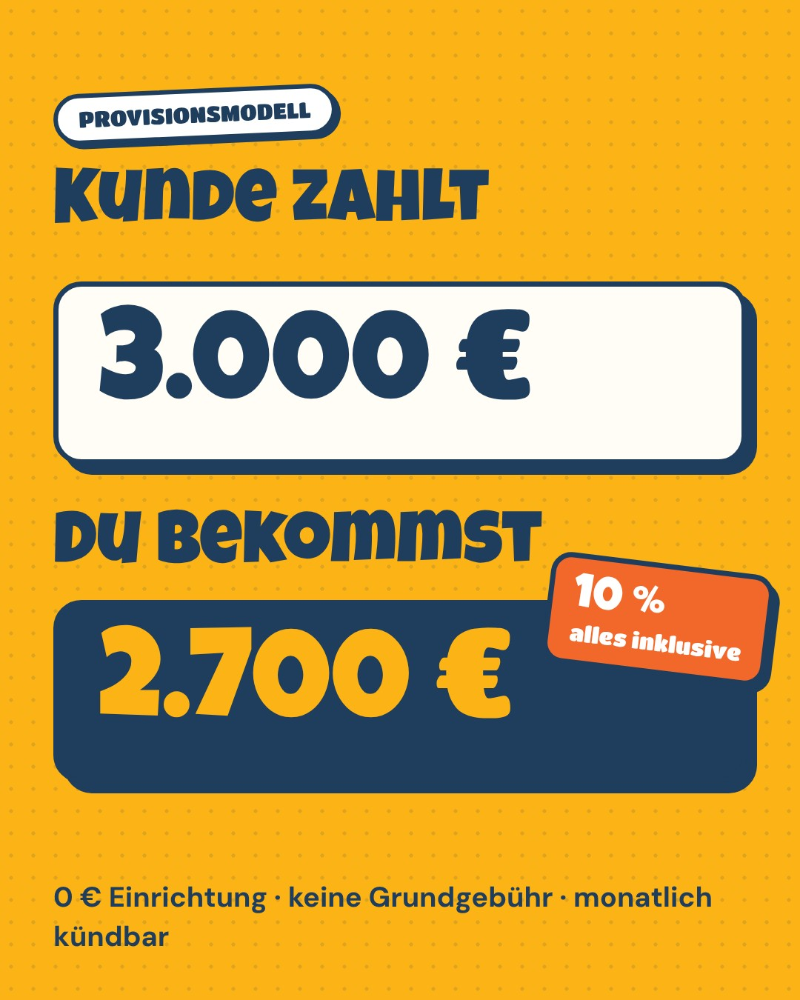
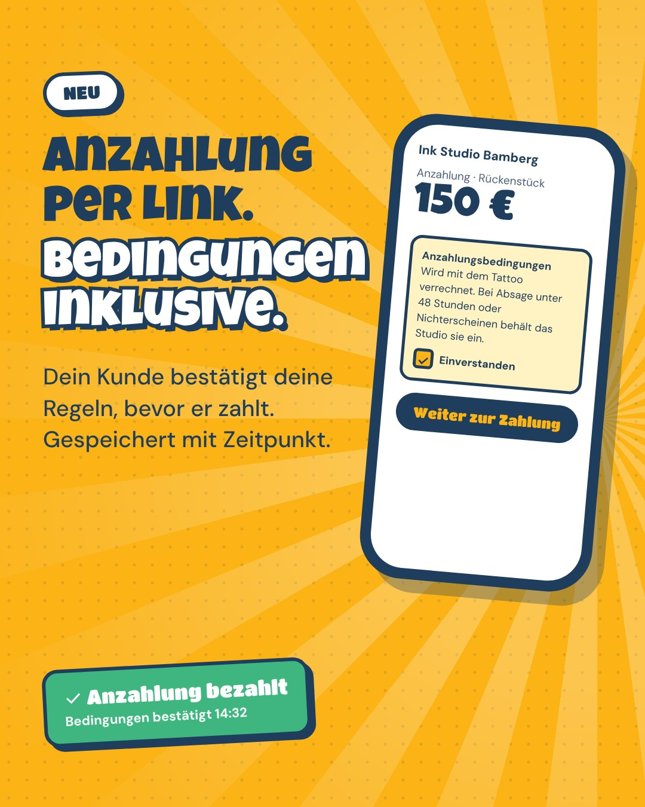

Instagram-Strategie für Tattoofin
Wer wir auf Instagram erreichen wollen, wie wir klingen, was wir posten und wie daraus Studios werden, die Tattoofin nutzen. Mit fertigem Redaktionsplan für die ersten zwei Wochen.
Stand 10/2026
Kurz gesagt
- Zielgruppe sind Studioinhaber, Studiomanager und selbstständige Artists. Keine Endkunden. Jeder Beitrag beantwortet eine Frage, die sich ein Studio stellt.
- Positionierung: Der Kumpel, der sich mit Zahlungen auskennt. Ehrlich rechnen statt verkaufen, Studio-Sprache statt Fintech-Sprech, Humor wie unser Maskottchen.
- Rhythmus: 3 Reels (Di, Do, Sa um 12:00) und 2 Karussells (Mi, Fr um 19:30) pro Woche, dazu Stories.
- Fertig produziert: 6 Reels, 4 Karussells mit Story, 4 Werbemittel in allen Formaten inklusive Video und dazu alle Texte. Die Medien liegen in der Marketing-Maschine.
- Lead-Magnet: Kommentar-Stichwort „ANZAHLUNG“ → Muster-Anzahlungsbedingungen per DM → Gespräch → Abschluss.
1. Ziel und Zielgruppe
Ziel für die ersten 8 Wochen: Tattoofin bei Studios bekannt machen, Vertrauen aufbauen und daraus planbar Gespräche erzeugen. Messbar über DMs, Klicks auf den Link in der Bio und Abschlüsse über start.html?utm_source=instagram.
| Kernzielgruppe | Inhaber von Tattoo-Studios mit 1 bis 8 Artists in Deutschland. Sie entscheiden allein und schnell, wenn es einfach ist und kein Risiko hat. |
| Daneben | Studiomanager (machen die Zahlungen, empfehlen intern) und selbstständige Artists mit eigener Kundschaft oder Gastspots. |
| Ihre Probleme | No-Shows und kurzfristige Absagen · große Projekte scheitern am Geld („Ich meld mich, wenn …“) · Anzahlungen über PayPal „Freunde“, bar oder per Überweisung mit Hinterherlaufen · Zettelchaos in der Buchhaltung · keine Zeit für Bürokram. |
| Was sie überzeugt | Klare Zahlen, kein Risiko, kein Vertragsknebel, echte Menschen als Ansprechpartner, andere Studios, die es schon nutzen. |
| Was sie abschreckt | Bank- und Fintech-Sprache, Versprechen wie „0 % Finanzierung“, Werbung, die nach Endkunden aussieht, Druck. |
2. Positionierung und Tonalität
Ein Satz: Tattoofin ist die einfachste Art, im Studio Zahlungen, Anzahlungen und Raten über Klarna anzubieten, eingerichtet und betreut, ohne Fixkosten.
- Du, auf Augenhöhe. Wir reden wie jemand, der schon an der Theke stand: Entwurf, Stencil, Sitzung, Sleeve, Rückenstück, No-Show, Walk-in.
- Ehrlich rechnen. Wir sagen auch, wann sich der Kauf nicht lohnt. Das schafft mehr Vertrauen als jede Werbung.
- Humor statt Hochglanz. Das Maskottchen und der Comic-Look sind unser Wiedererkennungszeichen. Selbstironie ja, über Kunden lustig machen nein.
- Kurz und konkret. Ein Gedanke pro Beitrag. Zahlen als Beispiel kennzeichnen.
| So nicht | So |
|---|---|
| „Finanzierung fürs Tattoo“, „Kredit“, „0 % Zinsen“ | „Ratenzahlung über Klarna*, je nach Freigabe“ |
| „Jeder Kunde kann in Raten zahlen“ | „Ob Raten möglich sind, entscheidet der Anbieter“ |
| „Schon ab 49 € im Monat“ (konkrete Raten) | keine Monatsraten, keine Zinssätze nennen |
| „Revolutionäre Payment-Lösung“ | „Link raus, Geld rein“ |
| „Garantiert keine No-Shows mehr“ | „Bedingungen bestätigt, Zustimmung gespeichert“ |
3. Content-Säulen
4. Formate und Rhythmus
| Di | Mi | Do | Fr | Sa | |
|---|---|---|---|---|---|
| 12:00 Mittagspause zwischen zwei Sitzungen | Reel | Reel | Reel | ||
| 19:30 nach Feierabend, Zeit für Büro-Themen | Karussell + Story | Karussell + Story |
- Reels (15 bis 18 Sekunden): Aufmacher in der ersten Sekunde, alles als Text im Bild, damit es auch ohne Ton funktioniert. Eigene Musik, keine Lizenzprobleme. Endkarte mit „Link in Bio“. Ziel: Reichweite bei Nicht-Followern.
- Karussells (7 Folien): Eine Frage, fünf Antworten, eine Handlung am Ende. Ziel: Speichern und Teilen, Vertrauen.
- Stories: Zu jedem Karussell eine Umfrage oder ein Quiz als Bild (Antworten per DM). Wer Zeit hat, setzt in der App zusätzlich einen echten Umfrage-Sticker.
- Montag ist frei: Viele Studios haben Ruhetag. Wir nutzen ihn für Auswertung und Planung.
5. Vom Beitrag zum Kunden
Lead-Magnet „ANZAHLUNG“
Wer unter einem Beitrag „ANZAHLUNG“ kommentiert, bekommt die Muster-Anzahlungsbedingungen als PDF per DM. Erst antworten, dann schicken, nie ungefragt verkaufen:
Antwort auf die Rückfrage, wenn es passt: „Mit Tattoofin bestätigen deine Kunden die Bedingungen direkt vor dem Bezahlen, gespeichert mit Zeitpunkt. Magst du es dir in 10 Minuten zeigen lassen? Oder schau hier: tattoofin.de“
Der Link zur PDF wird nach dem Zusammenführen in den Hauptzweig über GitHub Pages erreichbar (pdf/19-muster-anzahlungsbedingungen.pdf). Alternativ die PDF direkt in der DM verschicken.
6. Profil einrichten
| Benutzername | @tattoofin |
| Name (durchsuchbar) | Tattoofin | Zahlungen fürs Tattoo-Studio |
| Kategorie | Software (Alternative: Unternehmensdienstleistung). Nicht „Finanzdienstleister“. |
| Bio (max. 150 Zeichen) | Zahlungslinks, QR-Zahlseite & Anzahlungen für Tattoo-Studios 💳
Raten über Klarna* · 0 € Einrichtung
*Achtung! Kreditaufnahme kostet Geld. |
| Link | https://tattoofin.de/?utm_source=instagram&utm_medium=bio |
| Profilbild | social/facebook/export/profilbild.png (Maskottchen auf Gelb, wird rund angezeigt) |
| Kontakt-Buttons | E-Mail info@tattoofin.de, WhatsApp-Business-Nummer, Adresse ausblenden |
| Impressum | Im Profil als zweiten Link https://tattoofin.de/impressum.html ergänzen (geschäftliches Profil in Deutschland). |
Story-Highlights


„So geht's“ (Reels 15.10. und 22.10.) · „Preise“ (Reel 20.10., Karussell 23.10.) · „Anzahlung“ (Karussells 14.10. und 21.10.) · „Fragen“ (Story 16.10., FAQ). Cover liegen in social/instagram/profil/.
7. Hashtags, Interaktion, Community
- 3 bis 5 Hashtags pro Beitrag, passend zum Thema, immer mit
#tattoofin. Pool: #tattoostudio #tattoobusiness #tätowierer #tattooartist #studioalltag #studioinhaber #selbstständig #anzahlung #noshow #ratenzahlung #klarna #tattoolife. - Erste Stunde nach dem Posten: Jeden Kommentar beantworten, mit einer Gegenfrage. Das verlängert die Reichweite.
- 15 Minuten am Tag: Bei 10 Studios in Deutschland ehrlich kommentieren (zur Arbeit, nicht zu uns). Keine Kaltakquise per DM.
- Teilen fördern: Am Ende von Reels Fragen wie „Schick das der Person, die bei euch die Zahlungen macht.“
8. Kennzahlen
| Kennzahl | Wofür | Ziel nach 8 Wochen |
|---|---|---|
| Reichweite bei Nicht-Followern (Reels) | Neue Studios erreichen | über 60 % der Reichweite |
| Speichern + Teilen pro Karussell | Relevanz der Inhalte | über 3 % der Reichweite |
| Profilaufrufe → Link-Klicks | Interesse am Angebot | über 8 % |
| Kommentare „ANZAHLUNG“ und DMs | Gespräche | 10 pro Woche |
| Starts über utm_source=instagram | Abschlüsse | erste 5 Studios |
Jeden Montag kurz auswerten: Welche zwei Beiträge liefen am besten? Davon nächste Woche eine Variante machen. Schwache Formate nicht wiederholen.
9. Werbung über Meta (sobald das Konto verknüpft ist)




| Werbemittel | Ordner creatives/2026-10-13/c1–c4, jeweils Feed (4:5), Quadrat, Story und ein 9,5-Sekunden-Video mit Cover. Anzeigentexte stehen unten in Abschnitt 11. |
| Sonderkategorie | c1 erwähnt Raten, deshalb als Sonderkategorie „Finanzprodukte und -dienstleistungen“ anlegen (eingeschränktes Targeting). c2 bis c4 erwähnen keine Raten und laufen normal. |
| Phase 1 (14 Tage) | 10 € pro Tag, Ziel Traffic auf start.html?utm_source=meta&utm_medium=paid&utm_content=c2 (je Werbemittel eigenes utm_content). Test: c2 (No-Show) gegen c4 (Anzahlung), Video gegen Bild. |
| Zielgruppe | Deutschland, 22 bis 55 Jahre, Interessen Tätowierung, Tattoo-Studio, Tattoo-Künstler, Kleinunternehmer. Zusätzlich Retargeting: alle, die 50 % eines Reels gesehen oder das Profil besucht haben, bekommen c3 und das Karussell vom 23.10. |
| Phase 2 | Gewinner auf 20 bis 30 € pro Tag. Neue Varianten nur vom Gewinner-Motiv. |
10. Regeln, die immer gelten
- Jede Erwähnung von Raten bekommt ein Sternchen und die Fußnote mit „Achtung! Kreditaufnahme kostet Geld.“ (in Bild und Text).
- Keine konkreten Monatsraten, Zinssätze oder Laufzeiten. Keine Aussage, dass jeder Kunde Raten bekommt.
- Tattoofin ist kein Kreditgeber und vermittelt keine Kredite. Klarna nur als Beispiel für einen Anbieter nennen.
- Beispielrechnungen immer als Beispiel kennzeichnen.
- Keine echten Kunden, Namen oder Chats ohne schriftliche Erlaubnis zeigen. Die Namen in den Videos sind erfunden.
- Keine Aufpreise für Karte oder Ratenkauf empfehlen.
11. Redaktionsplan 13. bis 24. Oktober
Alle Texte zum Kopieren. Maschinenlesbar in social/instagram/beitraege.json und beitraege.csv (fürs Google Sheet der Marketing-Maschine).
Anzeigentexte (Meta Ads)
12. Ideen für die Wochen 3 bis 8
| Säule | Thema |
|---|---|
| Studio-Mathe | „Was kostet dich Bargeld wirklich?“ (Zählen, Bank, Risiko) · Mehrere Sitzungen: Anzahlung richtig verrechnen · Rechenbeispiel Walk-in-Tag |
| Produkt in Aktion | Monatsübersicht im Portal in 15 Sekunden · Zahlseite mit eigenem Logo · Gutschein per Link verkaufen (wenn verfügbar) |
| Klartext | Rückbuchung: Was du in der Hand haben solltest · 5 Fragen, die Kunden zu Klarna stellen · Kleinunternehmer und Umsatzsteuer: Was heißt das für dich? |
| Studio-Alltag | POV: Kunde will Anzahlung bar bringen · „Sag mir, dass du Studioinhaber bist, ohne es zu sagen“ · Typen von Kunden bei der Preisfrage |
| Beweise | Erstes Studio stellt sich vor · „Ein Monat mit Tattoofin“ in Zahlen · 30-Sekunden-Statement eines Inhabers |
13. Technik und Ablauf
- Medien:
tattoofin/JJJJ-MM-TT/(Reel:reel.mp4,cover.jpg),tattoofin/JJJJ-MM-TT_abend/(slide-1…7.jpg,story.jpg),tattoofin/creatives/2026-10-13/c1…c4/. - Live in der Marketing-Maschine sind die Medien erst nach dem Zusammenführen in den Hauptzweig und sobald das Instagram-Konto verknüpft ist. Texte ins Google Sheet übernehmen (CSV-Import).
- Achtung: Die Maschine legt für andere Marken eine Postingplan-Seite als
index.htmlim Markenordner an. Untertattoofin/index.htmlliegt die Übersicht dieser Unterlagen. Bitte prüfen, dass sie beim Einrichten der Marke nicht überschrieben wird. - Neu erzeugen: Bilder und Videos mit
node tools/render-instagram.mjs(Vorlagensocial/instagram/statisch.htmlundreel.html, Musiktools/reel-sound.py), Texte mitnode tools/export-instagram-texte.mjs.